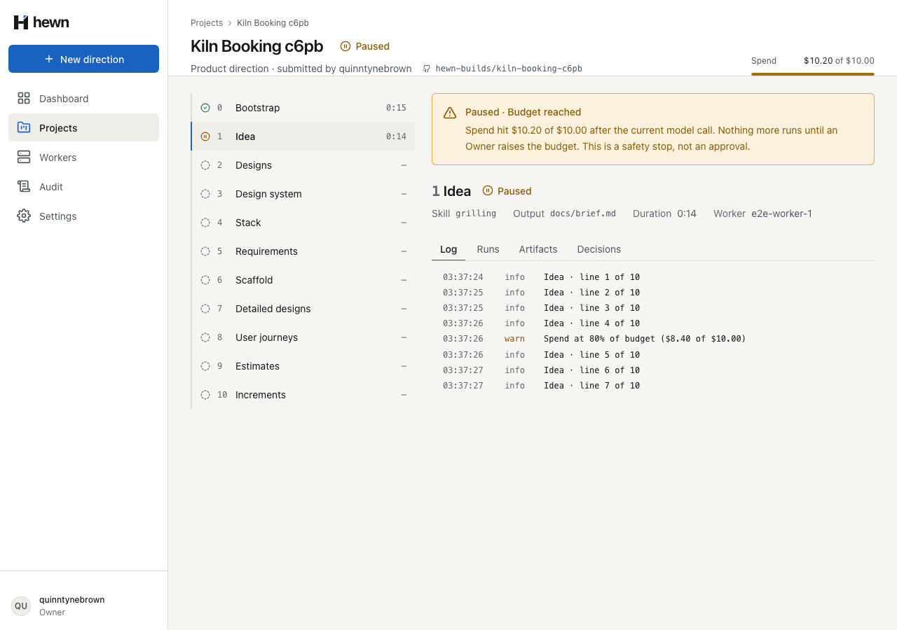
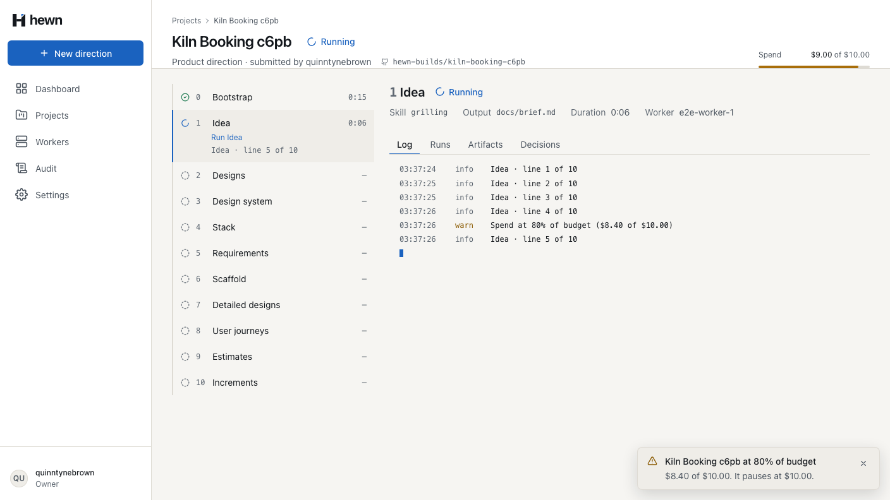
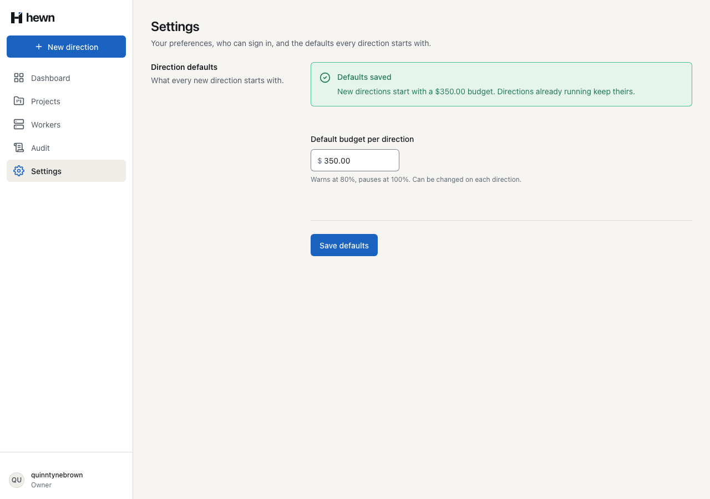
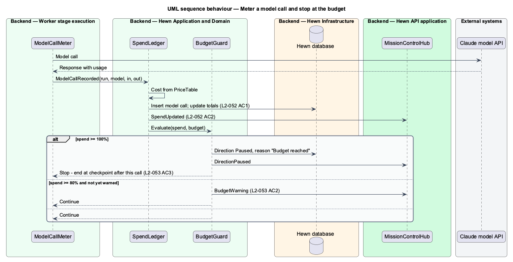
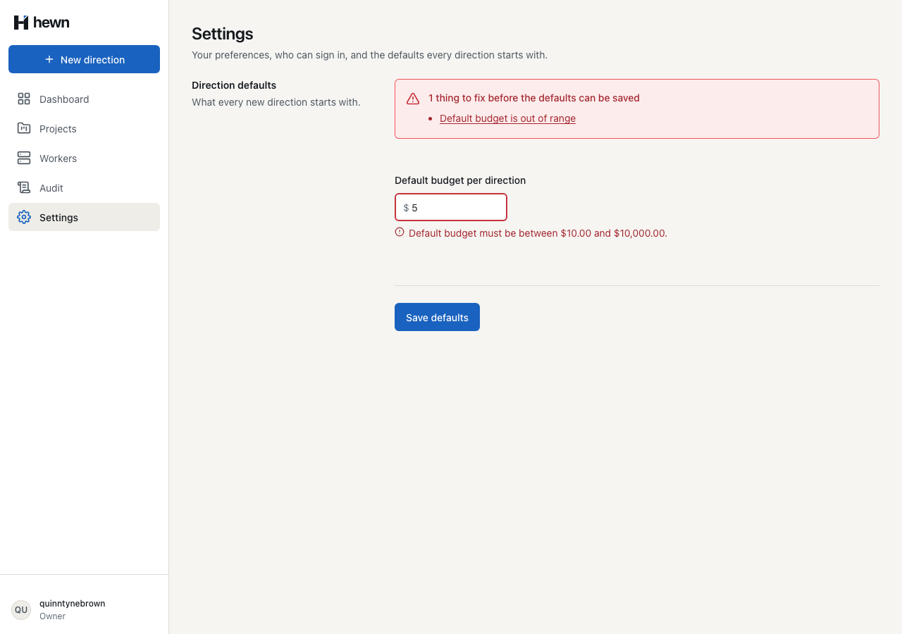
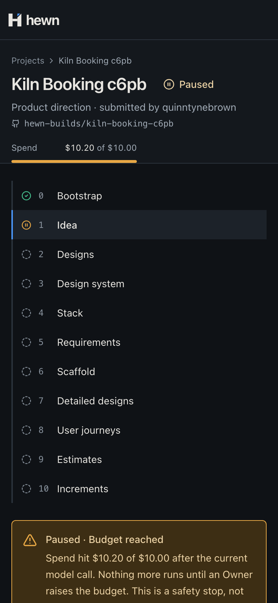
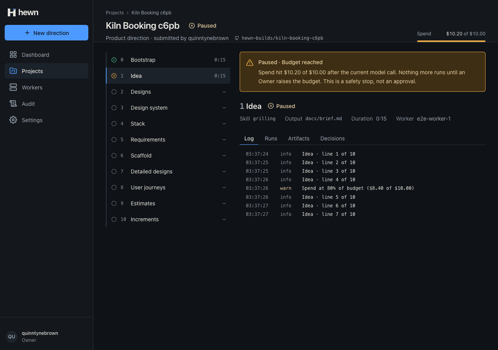
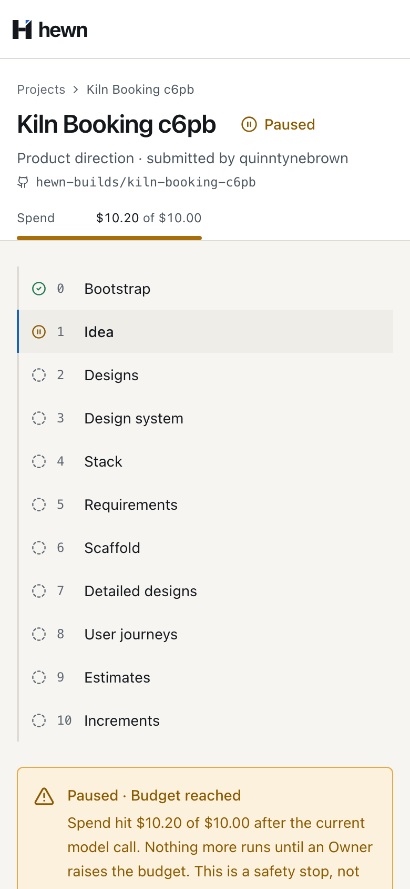
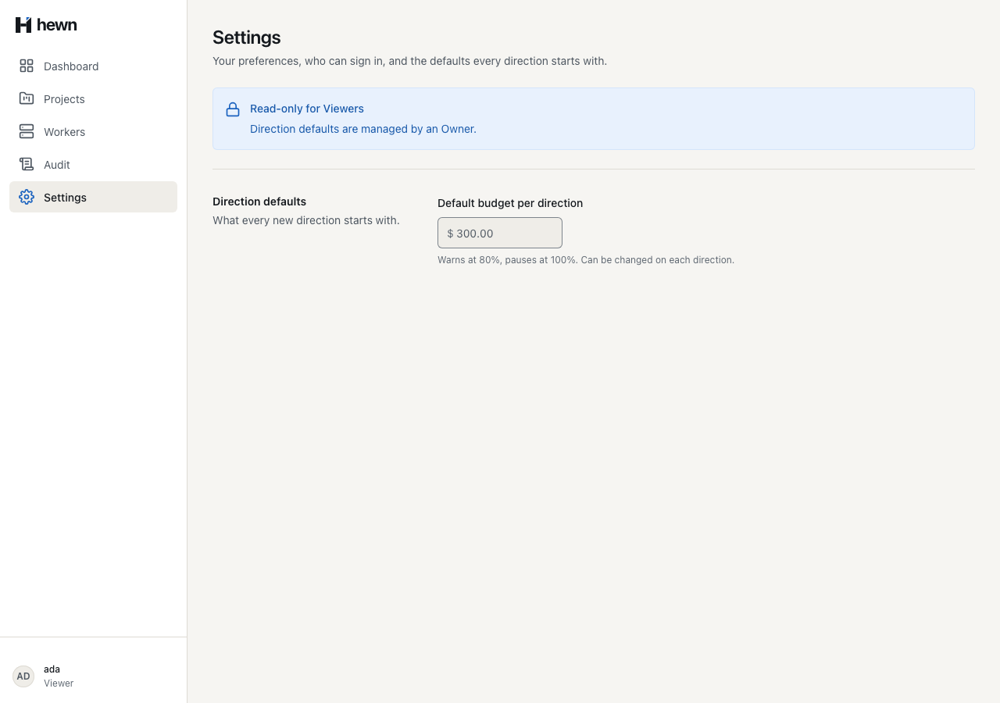
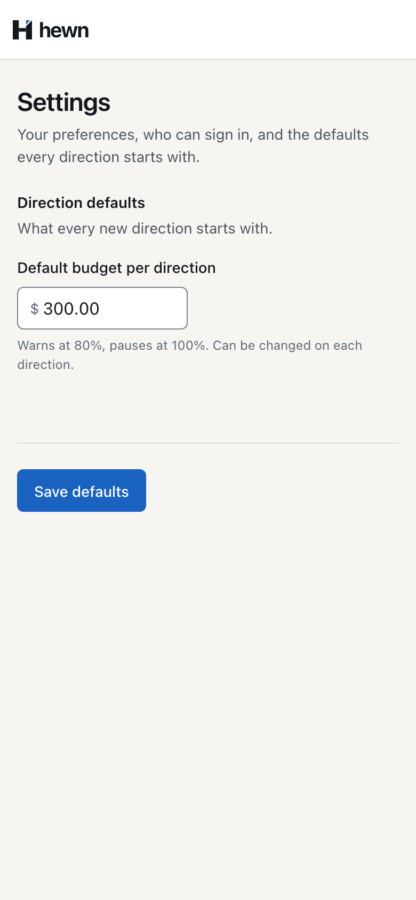

Price every model call, show spend live, warn at 80% and stop at the budget.




recordModelCall: async (call) => {
const { verdict, directionSpendUsd, budgetUsd } = await this.api.recordModelCall(workerId, run, {
callId: randomUUID(),
...call,
});
const spend = `${dollars(directionSpendUsd)} of ${dollars(budgetUsd)}`;
if (verdict === 'Warn') logs.add({ level: 'warn', text: `Spend at 80% of budget (${spend})` });
if (verdict === 'Stop') {
// Hewn has paused the direction and released the lease; nothing more of this run may reach it.
this.log('Budget reached; the direction is Paused', { runId: run.runId, spend });
const reached = new BudgetReachedError(`Budget reached (${spend}).`);
lease.abort(reached);
throw reached;
}
},
public decimal Cost(string model, long inputTokens, long outputTokens)
{
var prices = options.Value.Prices;
var price = prices.TryGetValue(model, out var known)
? known
: new ModelPrice(prices.Values.Max(p => p.InputPerMillionUsd), prices.Values.Max(p => p.OutputPerMillionUsd));
var cost = (inputTokens * price.InputPerMillionUsd + outputTokens * price.OutputPerMillionUsd) / 1_000_000m;
return Math.Round(cost, Decimals, MidpointRounding.AwayFromZero);
}
SpendUsd = Math.Round(SpendUsd + costUsd, 6, MidpointRounding.AwayFromZero);
var warned = false;
if (!BudgetWarned && SpendUsd >= BudgetUsd * WarnAtFraction)
{
BudgetWarned = true;
warned = true;
}
if (SpendUsd >= BudgetUsd)
{
return (BudgetVerdict.Stop, warned);
}
return (warned ? BudgetVerdict.Warn : BudgetVerdict.Continue, warned);
public async Task OnBudgetReachedAsync(Run run, Project project, Direction direction, CancellationToken cancellationToken)
{
run.Pause();
var stage = direction.Pause(run.Stage, Direction.BudgetReached);
await AppendStageAsync(direction, stage, cancellationToken);
await AppendDirectionAsync(direction, cancellationToken);
project.ChangeStatus(ProjectStatus.Paused);
await AppendProjectAsync(project, cancellationToken);
}
case 'SpendUpdated':
next.spendUsd = p['projectSpendUsd'] as number;
next.directions = project.directions.map((d) =>
d.id !== p['directionId']
? d
: {
...d,
spendUsd: p['directionSpendUsd'] as number,
budgetUsd: p['budgetUsd'] as number,
},
);
break;


it('ends the run right after the call that reaches the budget, without another call, checkpoint or result', async () => {
api.enqueueStage(0, 0, 0);
api.verdicts.push(
{ verdict: 'Continue', directionSpendUsd: 6, budgetUsd: 10 },
{ verdict: 'Stop', directionSpendUsd: 12, budgetUsd: 10 },
);
void start(callingExecutor(2, 3));
await vi.advanceTimersByTimeAsync(1_000);
expect(api.modelCalls).toHaveLength(2);
expect(api.calls.filter((c) => c.method === 'checkpoint')).toHaveLength(0);
expect(api.calls.filter((c) => c.method === 'result')).toHaveLength(0);
16 new, real API
4 new, fake API
Pipeline 12 · behaviour 15 · a11y 11 · visual 7



